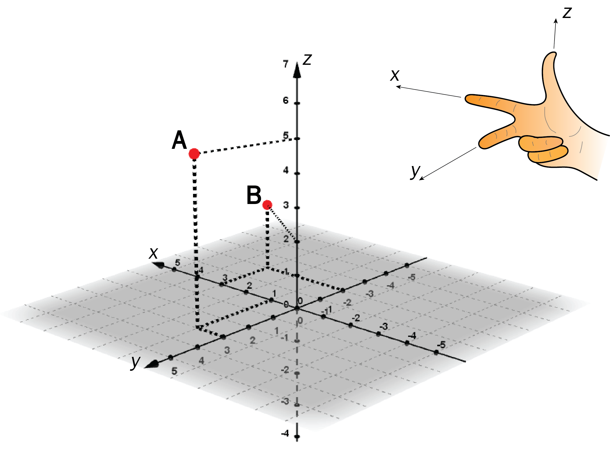
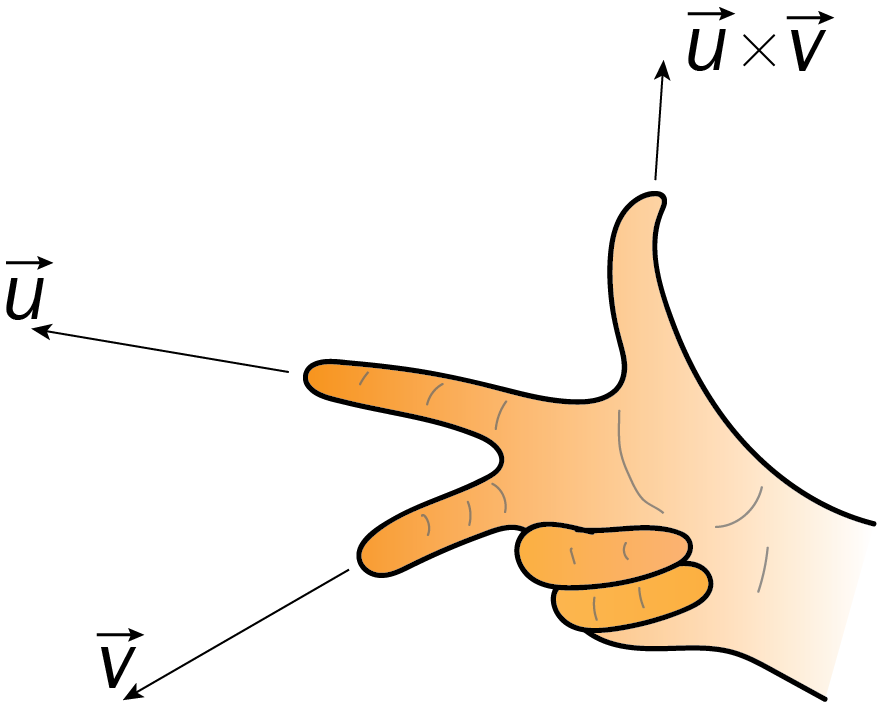
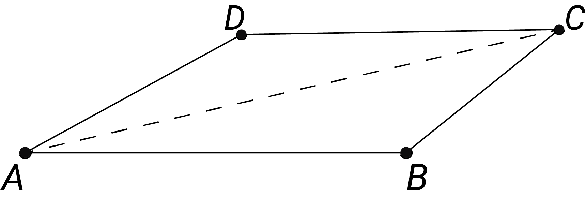
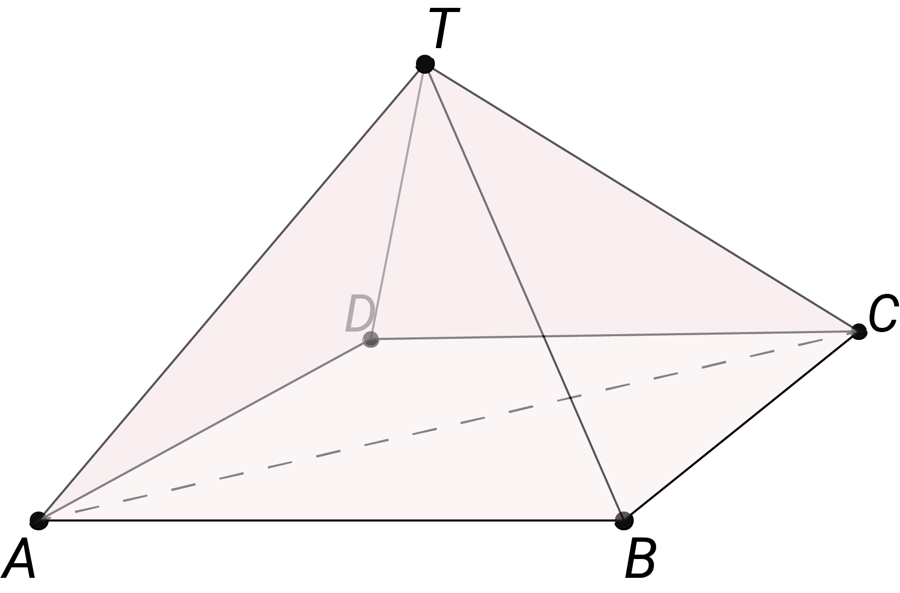
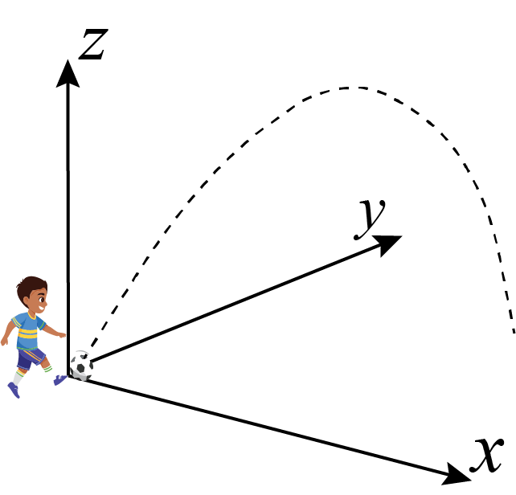
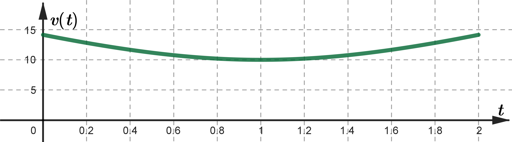
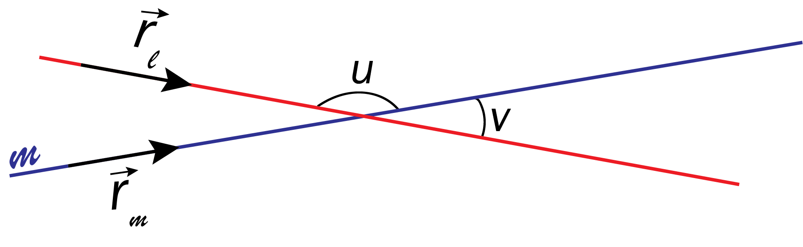
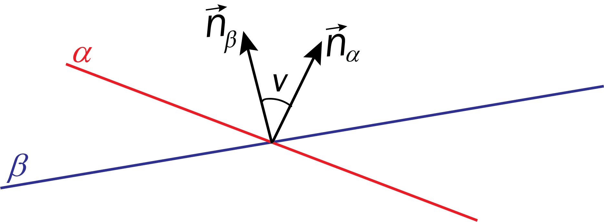
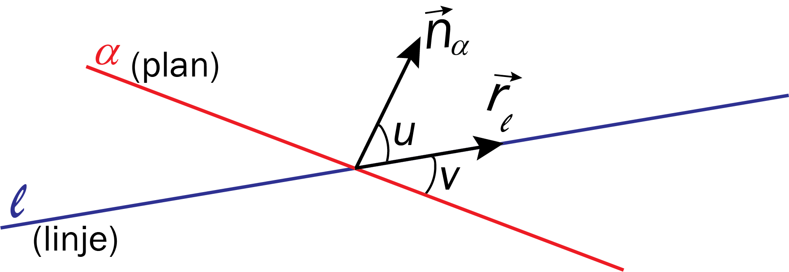
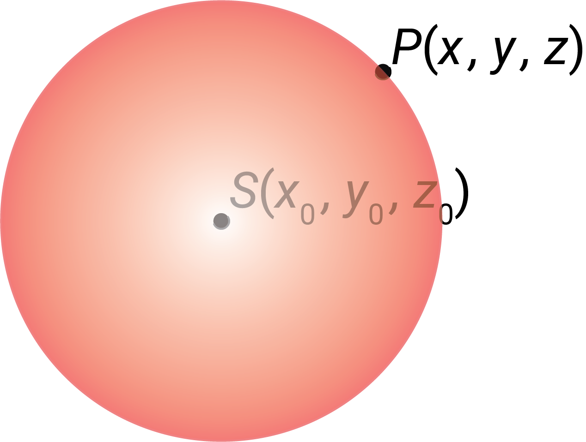

Sammendrag:

Vektoren mellom \(A(1,3,5)\) og \(B(3,-2,2)\) er
\[ \overrightarrow{AB} = [3-1,\,-2-3,\,2-5] = [2,\,-5,\,-3] \]Lengden av vektoren er
\[ \left|\overrightarrow{AB}\right| = \sqrt{2^2+5^2+3^2} = \sqrt{38} \approx 6 \]\(\vec{a}=[1,-2,3]\) er parallell med \(\vec{b}=[-2,4,-6]\) fordi \(\vec{a}=-\frac{1}{2}\cdot \vec{b}\).
Skalarproduktet mellom \(\vec{u}\) og \(\vec{v}\) er
\[ \vec{u}\cdot\vec{v} = |\vec{u}|\cdot|\vec{v}|\cdot\cos\alpha \]hvor \(\alpha\) er vinkelen mellom vektorene.
Vi finner vinkelen mellom \(\vec{a}=[-4,-1,1]\) og \(\vec{b}=[1,0,1]\):
\[ \begin{aligned} \vec{a}\cdot\vec{b} &= |\vec{a}|\cdot|\vec{b}|\cos(\alpha)\\ -4\cdot1+(-1)\cdot0+1\cdot1 &= \sqrt{18}\cdot\sqrt{2}\cos(\alpha)\\ -3 &= \sqrt{36}\cos(\alpha)\\ \cos(\alpha) &= -\frac{1}{2} \end{aligned} \]Fra enhetssirkelen ser vi at \(\alpha=150^{\text{o}}\).
hvor determinanten er
\[ \begin{vmatrix} \vec{e}_x & \vec{e}_y & \vec{e}_z\\ a_x & a_y & a_z\\ b_x & b_y & b_z \end{vmatrix} = \left[ \begin{vmatrix} a_y & a_z\\ b_y & b_z \end{vmatrix}, - \begin{vmatrix} a_x & a_z\\ b_x & b_z \end{vmatrix}, \begin{vmatrix} a_x & a_y\\ b_x & b_y \end{vmatrix} \right] \]hvor de små determinantene regnes ut ved å ta produktet av diagonalen nedover fra venstre mot høyre, minus diagonalen nedover fra høyre mot venstre,
\[ \begin{vmatrix} a_y & a_z\\ b_y & b_z \end{vmatrix} = a_y\cdot b_z-a_z\cdot b_y \]Retningen til vektoren \(\vec{u}\times\vec{v}\) er gitt av høyrehåndsregelen:

Gitt vektorene \(\vec{a}=[-4,-1,1]\) og \(\vec{b}=[1,0,1]\).
Vis at \(\vec{a}\perp \vec{a}\times\vec{b}\).

Arealet av parallellogrammet \(\square ABCD\) er
\[ \text{Areal}_{\square ABCD} = \left| \overrightarrow{AB}\times\overrightarrow{AD} \right| \]Arealet av trekanten \(\Delta ABC\) er
\[ \text{Areal}_{\Delta ABC} = \frac{1}{2} \left| \overrightarrow{AB}\times\overrightarrow{AC} \right| \]Gitt \(A(0,0,0)\), \(B(-4,-1,1)\) og \(C(1,0,1)\). Bestem arealet av \(\Delta ABC\).
som gir at arealet er
\[ \text{Areal} = \frac{1}{2}|[-1,5,1]| = \frac{\sqrt{(-1)^2+5^2+1^1}}{2} = \frac{\sqrt{27}}{2} \]
Volumet av pyramiden \(ABCDT\) er
\[ \text{Volum}_{ABCDT} = \frac{1}{3} \left| (\overrightarrow{AB}\times\overrightarrow{AD}) \cdot \overrightarrow{AT} \right| \]Volumet av pyramiden \(ABCT\) er
\[ \text{Volum}_{ABCT} = \frac{1}{6} \left| (\overrightarrow{AB}\times\overrightarrow{AC}) \cdot \overrightarrow{AT} \right| \]I en pyramide \(ABCT\) er hjørnene til grunnflata gitt ved \(A(0,0,0)\), \(B(-4,-1,1)\) og \(C(1,0,1)\). Toppunktet er \(T(1,0,3)\).
Bestem volumet av pyramiden.
Fra forrige eksempel har vi \(\overrightarrow{AB}\times\overrightarrow{AC}=[-1,5,1]\), som gir
\[ \text{Volum} = \frac{|[-1,5,1]\cdot[1,0,3]|}{6} = \frac{-1+0+3}{6} = \frac{1}{2} \]En linje \(l\) gjennom punktet \(P(x_0,y_0,z_0)\) som har retningsvektor \(\vec{r}=[a,b,c]\), kan beskrives av
\[ l: \begin{cases} x=x_0+a\cdot t\\ y=y_0+b\cdot t\\ z=z_0+c\cdot t \end{cases} \]hvor \(t\) er en parameter, som ofte representerer tid.
Lag en parameterfremstilling for en linje som går gjennom punktene \(A(1,2,3)\) og \(B(3,-1,-3)\).
En retningsvektor for linja er \(\vec{r}=\overrightarrow{AB}=[2,-3,-6]\).
Med utgangspunkt i \(A(1,2,3)\) får vi
\[ l: \begin{cases} x=1+2\cdot t\\ y=2-3\cdot t\\ z=3-6\cdot t \end{cases} \]Posisjonen til en partikkel kan beskrives av en vektorfunksjon:
\[ \vec{r}(t)=[x(t),y(t),z(t)] \]Fartsvektoren og banefarten er
\[ \vec{v}(t)=[x'(t),y'(t),z'(t)] \quad \text{og} \quad v(t)=\sqrt{(x'(t))^2+(y'(t))^2+(z'(t))^2} \]Akselerasjonsvektoren og akselerasjonen er
\[ \vec{a}(t)=[x''(t),y''(t),z''(t)] \quad \text{og} \quad a(t)=\sqrt{(x''(t))^2+(y''(t))^2+(z''(t))^2} \]Strekningen partikkelen tilbakelegger mellom \(t=a\) og \(t=b\) er
\[ s=\int_a^b v(t)\,dt \]En ball sparkes på skrått. Etter \(t\) sekunder er posisjonen, målt i meter, gitt ved vektorfunksjonen
\[ \vec{r}(t)=[8t,6t,10t-5t^2], \quad t\in[0,2] \]
Fartsvektoren til ballen er
\[ \vec{v}(t)=\vec{r}'(t)=[8,6,10-10t] \]Banefarten er
\[ \begin{align} v(t) &= \sqrt{8^2+6^2+(10-10t)^2}\\ &= \sqrt{200-200t+100t^2} = 10\sqrt{2-2t+t^2} \end{align} \]
Strekningen ballen tilbakelegger er arealet under grafen:
\[ s=\int_0^2 v(t)\,dx \approx 23 \text{ meter} \]Likningen for en uendelig stor, plan flate er
\[ ax+by+cz+d=0 \]Alle punkter \(P(x_0,y_0,z_0)\) som passer i likningen ligger i planet.
\(\vec{n}=[a,b,c]\) er en normalvektor til planet.
Et plan \(\alpha\) er gitt ved
\[ \alpha:\quad x+5y-2z-3=0 \]\(P(1,0,-1)\) ligger i planet:
\[ 1+5\cdot0-2\cdot(-1)-3=0 \]\(Q(1,2,3)\) ligger ikke i planet:
\[ 1+5\cdot2-2\cdot3-3=2\neq0 \]Normalvektoren til planet er \(\vec{n}=[1,5,-2]\).
Planet skjærer \(x\)-aksen når \(y=0\) og \(z=0\). Det gir \(x=3\).
Bestem likningen til et plan som går gjennom punktene \(A(1,0,2)\), \(B(3,1,3)\) og \(C(0,0,7)\).
En normalvektor til planet er \(\overrightarrow{AB}\times\overrightarrow{AC}=[5,-11,1]\), som gir
\[ 5x-11y+z+d=0 \]Vi bestemmer \(d\) ved hjelp av \(A(1,0,2)\):
\[ 5\cdot1-11\cdot0+2+d=0 \Rightarrow d=-7 \]Likninga er dermed \(5x-11y+z-7=0\).
Utgangspunktet for å finne vinkler er skalarprodukt, som sier at vinkelen \(v\) mellom to vektorer \(\vec{a}\) og \(\vec{b}\) er gitt ved
\[ \vec{a}\cdot\vec{b} = |\vec{a}|\cdot|\vec{b}|\cdot\cos v \]Vinkelen \(v\) mellom to linjer er vinkelen mellom retningsvektorene.

Vinkelen \(v\) mellom to plan er vinkelen mellom normalvektorene.

Vinkelen \(v\) mellom en linje og et plan er \(90^{\text{o}}-u\), hvor \(u\) er vinkelen mellom retningsvektoren til linja og normalvektoren til planet.

Avstanden \(D\) fra linja til et punkt \(Q(x_1,y_1,z_1)\) er
\[ D= \frac{ |\overrightarrow{PQ}\times \vec{r}| } {|\vec{r}|} \]hvor \(P(x_0,y_0,z_0)\) og \(\vec{r}=[a,b,c]\).
Avstanden fra \(Q(4,5,1)\) til linja er
\[ D= \frac{|[2,5,0]\times[2,1,-2]|}{|[2,1,-2]|} = 2\sqrt{5} \]Avstanden \(D\) fra \(P(x_0,y_0,z_0)\) til \(ax+by+cz+d=0\) er
\[ D= \frac{|ax_0+by_0+cz_0+d|} {\sqrt{a^2+b^2+c^2}} \]Avstanden fra \(P(1,2,3)\) til \(5x-11y+z=7\) er
\[ D= \frac{|5\cdot1-11\cdot2+1\cdot3-7|} {\sqrt{5^2+(-11)^2+1^2}} = |-\sqrt{3}| = \sqrt{3} \]
Likningen for en kuleflate med sentrum i \(S(x_0,y_0,z_0)\) og radius \(r\) er
\[ (x-x_0)^2+(y-y_0)^2+(z-z_0)^2=r^2 \]hvor alle punkter \( P(x, y, z) \) som passer i likningen ligger på kuleflata.
Likningen til en kule med sentrum i \(S(1,2,-3)\) og radius 4 er
\[ (x-1)^2+(y-2)^2+(z+3)^2=16 \]Ligningen til en kule er \( (x+1)^2+(y+2)^2+(z-1)^2= 2 \).
Sentrum er \((-1, -2, 1)\) og radius er \( \sqrt{2}\).
Bestem sentrum og radius til kuleflata gitt ved
\[ x^2-2x+y^2+14y+z^2=119 \]Vi må legge til tall på begge sider for å lage fullstendige kvadrater:
\[ \begin{aligned} x^2-2x+\mathbf{1} +y^2+14y+\mathbf{49} +z^2 &= 119+\mathbf{1}+\mathbf{49}\\ (x-1)^2+(y+7)^2+z^2 &= 169 \end{aligned} \]Sentrum er \(S(1,-7,0)\), og radien er \(\sqrt{169}=13\).
En kule har sentrum i \(S(1,2,3)\) og tangerer planet \(5x-11y+z=7\).
Bestem likningen til kula
Radien er avstanden til planet:
\[ D= \frac{|5\cdot1-11\cdot2+1\cdot3-7|} {\sqrt{5^2+(-11)^2+1^2}} = |-\sqrt{3}| = \sqrt{3} \]Likningen blir dermed
\[ (x - 1)^2 + (y - 2)^2 + (z - 3)^2 = 3 \]Bestem skjæringspunktene mellom linja
\[ l: \begin{cases} x=1+4t\\ y=7-5t\\ z=-3+3t \end{cases} \]og kuleflata gitt ved
\[ (x-1)^2+(y-2)^2+(z+3)^2=25 \]Vi setter \(x\), \(y\) og \(z\) fra linja inn i likningen for kuleflata:
\[ \begin{aligned} (1+4t-1)^2+(7-5t-2)^2+(-3+3t+3)^2 &=25\\ (4t)^2+(5-5t)^2+(3t)^2 &=25\\ 16t^2+25-50t+25t^2+9t^2 &=25\\ 50t^2-50t &=0\\ t&=0 \vee t=1 \end{aligned} \]Vi setter disse \(t\)-verdiene inn i parameterfremstillingen:
\[ \begin{cases} x=1+4\cdot0=1 \quad \vee \quad x=1+4\cdot1=5\\ y=7-5\cdot0=7 \quad \vee \quad y=7-5\cdot1=2\\ z=-3+3\cdot0=-3 \quad \vee \quad z=-3+3\cdot1=0 \end{cases} \]Skjæringspunktene er \((1,7,-3)\) og \((5,2,0)\).